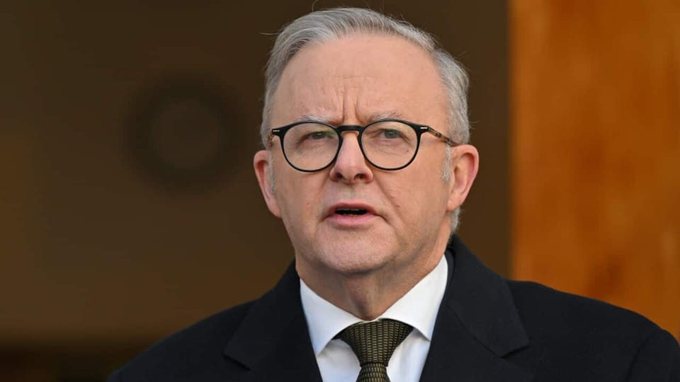

世界苦茶08月12日新闻 | 34条 | 特朗普峰会前重新摇摆回亲俄立场

特朗普峰会前重新摇摆回亲俄立场 | 中美正式确定关税延期90天 | 中国海警船与军舰在南海碰撞 | 卢秀燕不选国民党主席, 黄国昌参选新北市长 | 特朗普用联邦武力接管华盛顿治安
每日三條新聞解析
苦茶数据
美元兑人民币：7.19（昨日7.18，前日7.18）
美元兑日元：148.43（昨日147.82，前日147.32）
上证指数：3666（昨日3635，前日3637）
标普500指数：6373（昨日6389，前日6340）
比特币：118943（昨日119026，前日117949）
布伦特原油：66.82（昨日66.11，前日66.59）
中国新闻
• 河南狼狗咬死人主判刑 ：中国河南一名受害者路过羊场门口时遭狼狗咬死，狗主辩称与此事无关。法院最终判这名狗主监禁六年半。根据中国河南省高级人民法院星期一在“豫法阳光”微信公众号发布的上述案件，高姓被告在羊场内饲养三只大型烈性犬，虽然饲养期间多次扑倒、咬伤他人，但被告不以为意，并未采取任何防范措施避免类似事件再次发生。马姓受害者事发时从高姓被告羊场门口路过时，被告饲养的一只狼狗突然从狗笼底部窜出，撕咬受害者颈部及面部致受害者当场死亡。
• 谢锋谈中美关系友好 ：中国驻美国大使谢锋说，政治逆风挡不住人民友好，差异分歧不应成为中美关系的障碍，中美和平共处是理所应当，平等尊重是交往前提，对话合作是唯一正解。华盛顿国际钢琴艺术理事会“获奖者经典圈”钢琴音乐会星期天在中国驻美大使馆举行。谢锋出席并发表致辞。谢锋说，音乐是民心相通的桥梁，用音符跨越国界、超越分歧。半个多世纪前，费城交响乐团“带着两亿美国人民的友谊”率先访华，“音乐外交”冲破冷战阴霾，为中美建交发挥了积极作用。音乐架起沟通理解的桥梁，拉近人民心灵的距离，再次证明政治逆风挡不住人民友好，差异分歧不应成为中美关系的障碍。
• 特普会引中方关注 ：美国总统特朗普与俄罗斯总统普京8月15日将在美国阿拉斯加州举行会晤。这场“特普会”将会谈出什么效果，备受世人瞩目。中国作为俄罗斯的战略伙伴，近几年又多被西方指责明里暗里支持俄罗斯进行俄乌战争，自然也会高度关注“双普会”的进程和结果，尤其是美俄关系会不会由此开始改善，中俄关系是否会因美俄关系改善而受到影响，甚至有人猜测美国在“搞定”俄罗斯之后，会不会集中力量对付中国。中国官媒北京日报客户端8月9日报道称，“特普会”或能谈出“大单”。
• 菲海警称与中国舰相撞 ：菲律宾海岸警卫队发言人塔里拉称，中国海警船在南中国海水域追逐菲律宾巡逻船时，与中国海军军舰发生冲撞。综合法新社和彭博社报道，塔里拉星期一在声明中说，这起事件发生在有主权争议的斯卡伯勒浅滩附近，当时菲律宾海岸警卫队为给菲律宾渔船运送物资的船只护航。马尼拉发布的视频显示，一艘中国海警船与体积较大的船只发生剧烈冲撞。
• 辽宁养老诈骗涉资12亿 ：中国辽宁发生养老领域非法集资的案件，涉案金额高达12亿元人民币，主要犯罪嫌疑人已被抓获归案。中国公安部星期一在官网公布五起养老领域非法集资犯罪典型案例，其中包括上述以医养结合为名非法集资的案件。辽宁省沈阳市公安局2022年立案侦办这起李姓嫌犯等人涉嫌非法吸收公众存款案。公安部通报，2013年以来，李姓嫌犯等人注册成立养老产业公司，打着医养结合模式幌子，以出售消费卡、内部增资扩股等方式向社会公众吸收资金。
• 小马可斯称中方误解言论 ：中国外交部日前警告菲律宾不要在中方核心利益问题上玩火，对此，菲律宾总统小马可斯说，北京“误解”他的讲话。路透社报道，小马可斯上周接受印度媒体专访时说，若台湾海峡两岸爆发冲突，菲律宾“无法置身事外”。小马可斯在星期一的新闻发布会说：“这可能是出于宣传目的，我的讲话引起误解。”他说：“我感到困惑，为什么会被说成玩火呢？”
• 深圳非婚生育补贴争议 ：有中国网民反映自己非婚生育的女儿已经登记，被深圳市卫生健康委员会告知不可领取育儿补贴，话题在网络引发关注，深圳市卫健委回应，领育儿补贴是否需要结婚证明，要以8月底上线的申报系统为准。据南方+报道，有网民在微博发文称，收到深圳市卫健委的短信告知，因她生育前没办理结婚登记，不属于符合法律、法规规定生育子女，因此无法领取相关育儿补贴。这名网民表示不解，广东允许非婚生育办理生育登记，她的孩子也已经依法登记；她生产时用了生育险，也正常领取生育津贴，“法律全流程认可了她的出生”。
• 国家信访局谈化解矛盾 ：中国国家信访局局长李文章说，如果信访问题久拖未决，个别性事件可能激化为群体性事件，影响大局稳定；要正确处理维权和维稳的关系，从源头预防减少社会矛盾，引导群众理性合法表达利益诉求。中共中央党校机关报《学习时报》星期一在头版头条刊发李文章署名文章《充分发挥信访工作反映社情民意“晴雨表”作用》。文章称，信访制度是“中国民主政治制度的一项重要内容”，是群众权利救济的重要补充渠道，必须正确处理新形势下人民内部矛盾，努力把矛盾纠纷化解在基层、化解在萌芽状态，引导人民群众通过理性合法途径表达利益诉求、维护合法权益。
亚太印太新闻
• 台中市长不选国民党主席 ：台湾媒体报道称，台中市长卢秀燕考虑不参选国民党主席，将在明年底卸任前做好做满台中市长。被点名为参选国民党主席人选的新北市长侯友宜和桃园市长张善政受询时，均表示关注当前工作。综合台湾联合新闻网、中时新闻网和《自由时报》等报道，侯友宜星期一上午出席中环公园启用典礼应询时说，为民服务才是最重要的工作，大家都应积极努力，在岗位上为人民做事。在被追问是否有参选意愿时，侯友宜强调“把握当下、认真打拼”。
• 黄国昌将选新北市长 ：台湾在野的民众党主席黄国昌表态将参加明年新北市长选举，并称愿与国民党协商，共推最强人选。综合台湾联合新闻网和TVBS新闻网报道，也是民众党立法院党团总召的黄国昌星期一在一档线上节目访问时证实，自己的立委任期将在明年2月1日前届满。黄国昌表示，虽然担任立委才五年多，但对于议事攻防进退、质询、法案及预算，他已了然于胸，接下来将就位更重要的战斗位置。
• 朝鲜批美韩军演挑衅 ：朝鲜谴责韩美两国计划进行大规模联合演习，是“直接的军事挑衅”，并警告将采取反制措施。美韩年度联合军演“乙支自由盾牌”将于8月18日启动，为期11天。朝中社星期一报道，朝鲜国防部长努光铁星期天发表谈话，谴责美韩大规模联合军演再次给朝鲜半岛安保环境带来严重挑战。努光铁说，“乙支自由盾牌”联合军演以实际核战争作为假想情况，“不仅是对朝鲜的直接军事挑衅，而且是加剧处于停战状态的朝鲜半岛形势的不可预测性、固定地区局势不稳定化的真正威胁”。
• 台民调多数不赞成罢免 ：亲绿的台湾民意基金会发布的最新民调结果显示，逾六成民众不赞成大罢免，8月23日的第二波罢免投票，反罢方居绝对上风。台湾首波大罢免投票7月26日举行，24名国民党立委和新竹市的民众党籍市长高虹安均安全过关。第二波罢免投票将于8月23日举行，届时面对挑战的是七名国民党立委，当天也将举行重启核三案的公投。综合台湾《联合报》和ETtoday新闻云等报道，台湾民意基金会星期一发布的最新民调结果显示，61.4%受访民众不赞成大罢免，24%不太赞成，37.4%一点也不赞成；31.7%表示赞成，16.9%非常赞成，14.8%还算赞成；5.4%没意见，1.5%不知道、拒答。不赞成人数比赞成人数多29.7个百分点。
科技新闻
• 特斯拉九成电池料再利用 ：美国电动车企特斯拉全球副总裁陶琳在社交平台发文称，特斯拉认真对待电池回收，提取电池九成废料，用于制造新电池。陶琳星期一在个人微博账号发文称，很多消费者都关心，电力虽然比燃油更清洁，但电动车报废的电池会否对环境造成更大破坏？对此，陶琳的回应是，特斯拉认真对待每一块回收的电池，将它们全部再利用，其中90%的废料会被提取出来，投入到新电池的生产中。
• 英伟达再否认芯片后门 ：美国科技巨头英伟达H20晶片被中国官媒指不安全不先进“我们可以不买”后，公司再度重申晶片不存在“后门”。中国官媒则持续发难称，英伟达已三次做出类似回应，需要进一步的行动来印证。定位为“中美贸易战对美斗争需要”的中国央视新媒体“玉渊谭天”，星期一在微博发文称，“玉渊谭天”星期天“起底H20晶片可能存在的后门”后，英伟达回应称：“网络安全对我们至关重要，英伟达的晶片不存在‘后门’，不会让任何人通过远程方式访问或控制晶片。”“玉渊谭天”称，自中国国家互联网信息办公室7月31日约谈英伟达，要求说明晶片的漏洞或后门的安全风险问题以来，英伟达已三次做出类似回应，均强调网络安全对英伟达至关重要，晶片不存在“后门”。“这样的回应需要英伟达用进一步的行动来印证。”
• OpenAI公司申请GPT-5中国商标均被驳回： 8月11日，OpenAI上周正式发布新一代人工智能模型 GPT-5，据悉，该模型已在中国提交商标申请，国际分类涵盖科学仪器、网站服务，目前所有相关申请均已被驳回。具体来看，OpenAI公司已通过两家关联公司在中国提交了商标申请，其中欧爱公司已申请注册两枚“OPENAI GPT-5”商标，国际分类为网站服务、科学仪器，目前均处于等待驳回复审阶段；欧爱运营有限责任公司则申请注册了两枚 “GPT-5” 商标，国际分类同样为网站服务、科学仪器，商标状态也均为驳回复审中。据悉，“GPT”全称为“生成式预训练转换器”，已被全球多国商标机构认定为通用技术术语，缺乏显著性。
财经新闻
• 中国7月车市同比增14.7% ：中国7月汽车销量为259.3万辆，同比增长14.7%，其中126.2万辆是新能源汽车，占比达新车总销量的48.7%。据智通财经网报道，中国汽车工业协会星期一发布2025年7月汽车工业产销情况。数据显示，7月中国汽车产销分别完成259.1万辆和259.3万辆，环比分别下降7.3%和10.7%，同比则分实现两位数增长，即13.3%和14.7%。
• 台副院长争取美降关税 ：台湾行政院副院长郑丽君星期一在记者会上表明，台湾将在与美国的后续谈判中争取调降关税税率，同时不附带叠加条款。综合ETtoday新闻云和中时新闻网报道，美国对台湾实施的暂时性对等关税税率为20%，同时要叠加原有税率，引发争议。郑丽君星期一率领行政院秘书长龚明鑫、行政院政务委员兼总谈判代表杨珍妮、财政部次长阮清华、经济部次长何晋沧、劳动部次长李健鸿、农业部主秘林家荣召开行政院记者会，说明美国对等关税相关议题及产业支持方案。
• 美对印加税引反美情绪 ：美国对印度商品征收高额关税，在当地激起反美情绪，并引发抵制麦当劳、可口可乐、苹果等美国跨国公司的呼声。路透社报道，美国总统特朗普上周宣布对印度商品征收50%关税后，引发印度国内反美情绪升温。社交媒体上，支持购买本土产品、抵制美国产品的呼声不断扩大。此举不仅令印度出口商忧心，也使美印关系受损。与印度总理莫迪领导的印度人民党有关的“自由主义”组织星期天在印度各地举行小型公众集会，呼吁民众抵制美国品牌。
• 韩越拟2030贸易达1500亿 ：韩国总统李在明星期一在首尔龙山总统府与越共中央总书记苏林举行会谈，双方商定携手实现“到2030年将双边贸易额升至1500亿美元”的目标。韩联社报道，李在明在会谈后说，在韩越签署自贸协定10周年之际，两国决定加强军工和治安领域合作，积极开展国会和地方政府层面的交流。双方也将加快推进互利共赢的经济合作，为此将在核电、高铁、新城市开发等大规模基建领域深化合作，并进一步加强在人工智能、生物、能源等先进产业领域共同研究和可再生能源领域的合作。李在明向越方介绍旨在建设韩朝和平共处、共生共荣的韩半岛的构想，两国商定携手推动朝鲜半岛和平进程和朝核问题取得实质性进展。
• 美财长称中国经济不均衡 ：美国财政部长贝森特接受日本媒体专访时说，中国是现代世界史上最不均衡的经济体，北京的经济政策本质是创造就业岗位的政策，与西方民主国家有着根本不同。据日经中文网报道，美国总统特朗普的对等关税措施上星期四正式生效后，贝森特当天在美国财政部接受了《日本经济新闻》专访。贝森特说：“中国是现代世界史上最不均衡的经济体。我们认为很多中国产品的销售价格低于生产成本。中国的制造业从政府那里获得巨大利益，本质是创造就业岗位的政策。中国经济与西方国家和亚洲民主国家有着根本的不同。”
• 美财长谈关税或缩减 ：美国财政部长贝森特接受《日经新闻》访问时说，与各国的贸易谈判预计将在10月底完成。如果美国和其他国家的贸易失衡现象改善，美国对贸易伙伴进口商品征收的对等关税可能会缩减。美国总统特朗普的对等关税措施上星期四正式生效后，贝森特向《日经新闻》发表上述言论。美国的一些主要贸易伙伴，包括加拿大、墨西哥和瑞士仍在寻求与美国达成更有利的贸易条款，并设法降低关税。贝森特说，特朗普政府实施关税的主要目的是重新平衡美国的经常账户赤字。截至2024年，美国赤字为1.18万亿美元，远超其他主要经济体，这个规模的赤字可能会引发金融危机。
• 特朗普望中增购美大豆 ：美国总统特朗普深夜发文说，希望中国能迅速将美国大豆订单量增加四倍，以大幅减少贸易逆差，“我们将提供快速服务，感谢习近平主席”。特朗普当地时间星期天深夜11时许在自家社交媒体平台Truth Social发文称，中国正担忧大豆短缺问题。“我们的伟大农民生产出最优质的大豆。我希望中国能迅速将大豆订单量增加四倍。”他说：“这也是大幅减少美国对华贸易逆差的一种方式。我们将提供快速服务。感谢习近平主席。”
• 长安汽车董事长拜访任正非 ：由原兵器装备集团分立的中国新央企长安汽车董事长朱华荣，在履新的第11天到深圳拜访中国科技巨头华为创始人任正非，交流产业竞争态势和未来格局。长安汽车董事长朱华荣上周六在微博发文称，他上周五前往深圳拜访华为创始人任正非，围绕产业竞争态势、未来竞争格局等交流学习。当天是朱华荣履新长安汽车集团董事长的第11天。朱华荣说：“任总还就支持长安汽车、阿维塔品牌等提出针对性、指导性意见。任总的视野、格局、睿智、激情，我等感触颇深，受益匪浅，令人敬佩！”
俄乌战争
• 北约称特普会是和平考验 ：北约秘书长吕特说，本周举行的美俄领导人会晤是检视俄罗斯总统普京是否真诚寻求和平的一个关键考验。《纽约时报》报道，美国总统特朗普和普京星期五将在阿拉斯加州举行会谈，这是特朗普1月重返白宫以来，首次与普京面对面会晤。吕特星期天接受美国广播公司访问时说，特朗普显然正在向普京施压，他说：“这次会晤至关重要，因为它将考验普京，看他结束这场可怕战争的决心到底有多大。”
• 美副总统称三方会晤难成行 ：美国副总统万斯说，美国正在努力安排一场包括乌克兰总统泽连斯基的美俄乌三方会晤，但他认为，俄罗斯总统普京和泽连斯基在美俄领导人举行双边会谈前进行会面，不是一个好主意。美国总统特朗普和普京星期五将在阿拉斯加州举行会谈，这是特朗普1月重返白宫以来，首次与普京面对面会晤。《纽约时报》报道，万斯在福克斯新闻星期天播出的访问中说：“其中一个最重要的障碍是，普京说过他绝不与泽连斯基坐下来谈，总统特朗普得打破这个僵局。”
• 俄罗斯袭击乌克兰境内与阿塞拜疆相关的设施后，阿利耶夫批准向基辅提供200万美元能源援助： 据阿塞拜疆媒体First News Media报道，阿塞拜疆总统伊利哈姆·阿利耶夫于8月11日签署命令，拨款200万美元给阿塞拜疆能源部，用于向乌克兰提供人道主义援助。这笔拨款将用于从总统的2025年储备基金中购买和运输阿塞拜疆制造的电气设备。此前，俄罗斯对与巴库相关的乌克兰能源基础设施进行了一系列袭击。8月8日，俄罗斯军队向乌克兰敖德萨州的阿塞拜疆国家石油公司仓库发射无人机，导致一条柴油管道受损，四名工人受伤。此次袭击是俄罗斯近期第二次对乌克兰境内与阿塞拜疆有关的设施发动袭击。此前，俄罗斯于 6 月底袭击了奥尔利夫卡附近的一个天然气分配站。该站是跨巴尔干管道的一部分，该管道于 7 月份开始向乌克兰输送阿塞拜疆的天然气。
• 特朗普称赞“尊重”普京，并在关键峰会前批评泽连斯基： 特朗普表示，他会在会后立即致电泽连斯基和其他欧洲领导人，如果他认为双方达成了一项公平的协议，他会“向”他们“透露”。他为自己决定单独会见普京的决定进行了辩护。“我想说泽连斯基可以去，但他参加过很多会议。他在那里待了三年半，什么也没发生。你想要一个已经待了三年半的人吗？”特朗普在华盛顿告诉记者。“我和泽连斯基相处得很好。但你知道，我不同意他的所作所为——非常非常不同意。这是一场本不该发生的战争。”特朗普多次指责其前任拜登和泽连斯基“允许”普京在2022年2月对乌克兰发动全面入侵，并声称如果他特朗普是美国总统，普京就会克制自己。 （翻评：特朗普在会谈前为了让乌克兰接受割让领土再次摇摆回亲俄立场。）
国际新闻
• 伊朗高官出访伊黎两国 ：伊朗最高安全机构负责人拉里贾尼将访问伊拉克，随后前往黎巴嫩。法新社引述伊朗国家媒体报道，拉里贾尼将于星期一启程前往伊拉克，预计两国将签署一项双边安全协议。他之后将到黎巴嫩进行为期三天的访问，期间将会见黎巴嫩高级官员。这是他自上周就任最高国家安全委员会主席以来的首次出访。
• 新西兰或承认巴勒斯坦国 ：新西兰外交部长彼得斯说，新西兰政府将于9月决定是否正式承认巴勒斯坦国。新华社报道，彼得斯星期一在声明中说：“政府将在下个月仔细权衡在承认巴勒斯坦国问题上的立场。”他说，新西兰将根据自身原则、价值观和国家利益，在审慎评估的基础上做出决定。他也说：“新西兰长期以来一直明确表明，我们承认巴勒斯坦国只是时间问题，而不是承认的问题。”
• 特朗普令无家可归者搬离 ：美国总统特朗普在社媒平台发文，下令华盛顿特区的露宿街头者马上搬离首都，并要把罪犯关进监狱。综合英国广播公司和新华社报道，特朗普星期天在Truth Social写道：“我们要夺回首都。“无家可归者必须马上搬走。我们会给你们提供住所，但远离首都。至于罪犯，你们不必走，我们会把你们送进监狱，那才是你们该去的地方。”
• 澳洲将承认巴勒斯坦国 ：澳大利亚总理阿尔巴尼斯星期一宣布，澳洲将在9月召开的联合国大会上承认巴勒斯坦国。《悉尼先驱晨报》当天早前引述未具名的知情人士说，阿尔巴尼斯可能在星期一的例行内阁会议后批准这一决定。近几个月，澳洲和以色列之间的传统密切关系出现裂痕。阿尔巴尼斯和新西兰总理拉克森两天前发表联合声明，称以色列控制加沙城可能违反国际法，并敦促以色列政府重新考虑对哈马斯在加沙城的最后据点进行军事清剿。
• 特朗普接管华府警局 ：美国总统特朗普宣布，联邦政府将接管华盛顿特区大都会警察局，并部署约800名国民警卫队员，以应对犯罪问题。美国有线电视新闻网报道，特朗普星期一在白宫举行记者会说：“我正式援引《哥伦比亚特区地方自治法》第740条，你们知道这是什么，将华盛顿特区大都会警察局置于联邦政府的直接控制之下。”他说，这是因为“情况失控了，但我们会迅速控制住它，就像我们在南部边境所做的那样”。 （翻评：所以在这个情况下还喜欢特朗普的，毫无疑问是极权独裁的爱好者。）
• 法核电站水母致停机 ：法国电力集团说，由于冷却系统出现大量水母，因此关闭法国格拉沃林核电站的四座反应堆，这可能是由于全球变暖导致水温上升所致。路透社报道，法国电力集团星期一发声明称，格拉沃林核电站的2号、3号和4号反应堆在午夜前自动停止运行，原因是泵站的滤筒中挤满“大量且难以预测”的水母，6号反应堆也在几小时后停止运行。声明说，这次事件并未影响设施、人员及环境安全。
• 半岛台记者加沙遇袭 ：半岛电视台六名加沙记者遇袭身亡，英国和联合国对此强烈谴责。路透社报道，英国首相斯塔默的发言人星期一说，对加沙记者屡遭以色列空袭身亡“深感担忧”。另据法新社报道，联合国人权机构也谴责以色列“严重违反国际人道法”。